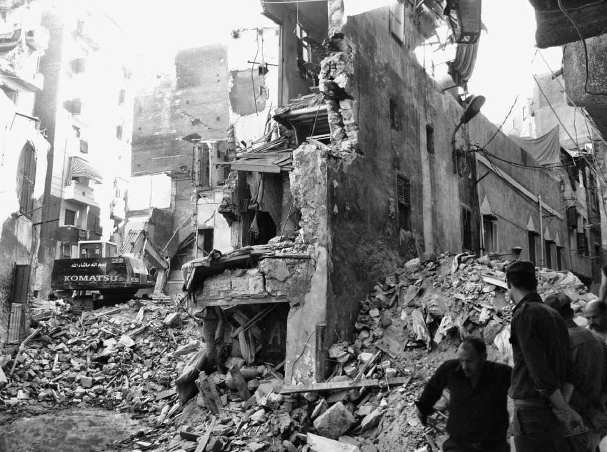
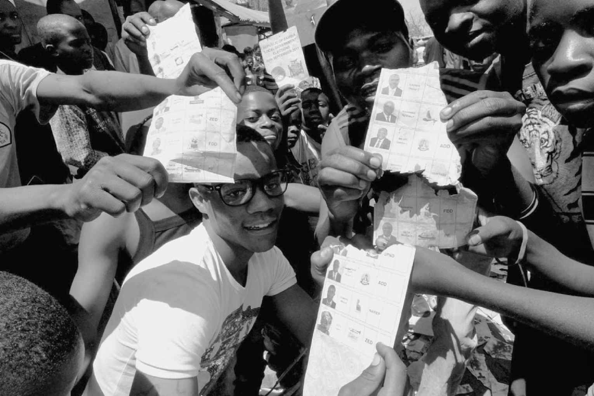

腐败以多种方式对个人、群体和组织（包括国家）造成冲击。其负面影响，许多显而易见，另一些则相对隐蔽。为使叙述更清晰，这里分别从社会、环境、经济、政治—法律、安全以及国际影响诸方面进行考察；在现实中，某些腐败行为一般会同时在多个领域造成影响。
社会
腐败通过无数方式对社会产生负面影响，这里不得不有所取舍。其中一个是对普通人的工作和生活环境产生影响。在2013年5月于华盛顿市发表的一次演说中，乌干达反腐联盟执行主任声称，2012年在乌干达发生了一件丑闻，巨额养老金因腐败被窃取；如果这些钱用在刀刃上，将会雪中送炭，使3万多名小学教师或4.6万名警察的工资提升50%，或者能提供近1800万支抗疟疾药剂。
对于许多发展中国家和转型国家，腐败造成的一个严重问题就在于它会减少援助，因为有捐赠意向或借款意向的人，看到某些国家的精英似乎把大部分资源都中饱私囊，则要么会终止提供资金，要么会拒绝提供。不幸的是，通常社会上最贫困的人群受此危害最甚。
腐败很容易从横向和纵向两个方向上，在社会中让人们更强烈地意识到“他们”和“我们”之别。精英和大众之间的鸿沟本来没有那么大，却往往被拉得很大，因为人们感到，腐败官员以牺牲普通国民为代价侵占了国家的财富（纵向裂痕）。同时，腐败也会扩大国民自身之间的分裂（横向裂痕），因为那些不愿或无力行贿以获取所需的人，会对能够且的确行贿的人充满憎恨。
一个相关的事实是，腐败会加剧不平等。如果不平等看起来基于功绩，即使程度较高，许多国民也会在合理范围内加以容忍；但如果优质工作和晋升的获取更多地基于私人关系和贿赂，就会受到憎恨。如果不断拉大的不平等再伴以更高程度的贫困，问题就会恶化，而事实往往正是如此。在世界货币基金组织于1998年发布的一项具有重大影响的分析中，作者们研究了30多个国家长达18年的数据，令人信服地表明腐败程度的加剧不仅会拉大收入差距（由基尼系数反映出来），也会加深贫困程度。贫困与身体和精神上的不健康状况息息相关，因此腐败会直接影响人的幸福。
如果腐败意味着对国家及其官员越来越不信任，就会普遍出现“向家庭回归”和对亲情日益依恋。这种现象可能会带来一个负面效应，那就是强化的“亲友”认同会减少社会资本，加大社会群体之间的疏离，从而导致族群冲突。
高度腐败以及随之产生的对国家缺乏信任，会加剧社会中的不安全感。比如，公民如果由于腐败问题而不信任执法官员，就会不太愿意向当局报告犯罪行为，也不愿与当局合作；这通常导致犯罪率更高，从而使公众产生更强烈的不安全感。
由于腐败，官员们自身可能会感到更不安全。如果政治精英决定重拳反腐，即使是正直的官员也会感到不安，因为当前不算腐败的行为未来可能会归为腐败并受到相应惩处；这会让他们在履行常规和正当职责时犹豫不决，甚至完全拒绝履行。在理想的法治国家，任何立法都不会溯及既往，这样的问题就不会出现；但在当今，即使是在西方，也少有国家严格遵循法不追溯这一观念。
在许多后共产主义国家，数十年中都不存在真正的有产阶级，没有哪个群体有合法资金投入新生的市场化、私有化经济中，由此导致其早期的转型过程更为艰难。在此情形下，腐败有助于催生一个新的富裕的资产阶级，但这是以不正当收入为前提的，破坏了这一新生阶级及其观念的公众基础。
某些分析人士认为，近年来有组织犯罪中发展势头最迅猛的，是与网络犯罪相结合的人口贩卖。在这种现代奴隶制中，若非有腐败官员共谋，被贩卖人口的规模不会如此之大。非洲国家中，尼日利亚的许多妇女被卖往欧洲从事卖淫活动，尼日利亚因而成为主要的受害国家；奥西塔·阿格布详细分析了腐败官员在其中发挥的作用。
除了在人口贩卖中发挥作用，腐败官员还会在武器贩卖中成为同谋，而武器贩卖会增加谋杀率，成为恐怖分子的帮凶。由于卷入武器贩卖，孟加拉国两名政府部长于2014年被判处死刑。
腐败会危及人的生命，其表现有多种形式，其中之一与洪水有关。树有许多好处，比如可以防止土壤流失。在某些国家，腐败官员为了得到贿赂，往往会对河岸沿线砍伐树木的行为视而不见。这种砍伐有时会导致暴雨之后河岸崩塌，河边建造的房屋院落被毁，许多生命由此葬身于洪水。
腐败危及生命的另一种极为常见的形式与建筑行业相关。有些建筑和安全监理人员由于受贿而无视行业中的玩忽职守，包括使用劣质材料；他们已经因不合标准的建筑产品造成人员伤亡而受到控告。其中一个特别严重的例子是2007年埃及亚历山大市的建筑倒塌事件，造成35人死亡，当地官员的大面积腐败由此受到指控。鉴于近年来埃及其他城市发生了更多的类似案例，埃及当局显然任重道远；2013年1月，亚历山大市的一幢公寓楼倒塌，至少24人丧生，再次引起对腐败问题，包括对埃及住宅部部长的严厉指控（图2）。就死亡人数来说，更严重的事故是1995年韩国首尔一座百货大楼的倒塌，造成502人死亡；最终，倒塌原因被部分归结于两名市政建筑监察人员的腐败，他们被判在大楼建造阶段犯有受贿罪。

图2 2012年埃及的一幢建筑倒塌，19人丧生，据称由腐败导致
目前为止，我们重点关注的是狭义腐败（即涉及国家官员）的负面影响。21世纪，公众已经对广义腐败可能产生的破坏性影响变得远为敏感。随着西方国家的公司前仆后继地（仅举几例：美国安然、美国世通、意大利帕玛拉特、德国西门子、澳大利亚小麦局）被曝行为不端，包括行贿和给予回扣以获得海外订单，公众对商业企业的信心轰然瓦解。许多人坚持认为，2008年全球金融危机的部分原因就在于公司行为不端，并视其为重大经济问题的根源，这些问题社会影响恶劣，波及就业和养老金体制。
关于腐败的报道 也会对公众产生负面影响，它会强化普遍的失望感甚至绝望感。然而，很难确定多少数量的报道、什么类型的报道才是最恰当的；套用一句老生常谈，对媒体来说“坏消息就是好消息” [2] ，极少有记者能自我克制，不去尽可能多地报道丑闻，不论相关指控有没有经过彻底调查。对腐败不负责任的报道会让民众怀疑媒体的“看门狗”角色，这对公民社会的成长是有害的。
环境
环境大概是人类面临的最大的长期问题。不幸的是，腐败通常会使这个领域已经存在的问题复杂化。根据联合国毒品和犯罪问题办公室（UNODC）的说法，与环境相关的腐败包括：
该办公室还指出了最容易发生腐败的领域：林业、石油开采、濒危物种贩卖，以及有毒废料处理。
全球许多木材生产和出口巨头，包括巴西、印度尼西亚和俄罗斯，都经历过严重的环境破坏，原因就在于腐败官员纵容非法砍伐。有人声称，近年来世界上产出的木材，有一半以上是非法砍伐得来的，其中多数都涉及贿赂和腐败。
至于濒危物种，2011年，致力于阻止野生动物贩卖的非政府组织“自由土地”的负责人声称，该组织在反贩卖项目上遭遇的首要问题就是腐败，尤其是高层次腐败。腐败会间接导致各种野生物种的灭绝。
经济
对于腐败造成的影响，研究和报道最多的是经济方面。在1990年代中期发表的一份被频繁引用的报告中，经济学家保罗·莫罗反驳了一些人在1960年代提出的主张，即腐败（比如向官吏交纳疏通费或者说“加急费”以更快获得许可）实际上能提高经济增长率。基于大量数据，莫罗将多个国家的增长率和对该国腐败程度的主观评估进行对比，得到的结论是腐败会阻碍投资，反过来又会降低增长率。虽然有人对此主张提出了质疑，多数观点仍然认为莫罗基本上是正确的。
比如，在发表于2000年的一篇论文中，魏尚进 [3] 认为腐败率越高的国家，外商直接投资越低，因为潜在的投资者会因腐败而止步。
一国若留给外界高度腐败的印象，要获准进入某些国际“俱乐部”，尤其是欧盟，就会极为困难甚至没有可能；毕竟，其加入这些“俱乐部”的动机，正是从成员身份中看到了可能获得的重大经济利益。即使已经进入此类跨国组织，高度腐败的印象也会造成严重经济后果：保加利亚、罗马尼亚和捷克三个新成员国自加入欧盟（前两国于2007年加入，捷克于2004年加入）以来被大量削减拨款，原因正在于欧盟对其腐败程度的忧虑。此外，保加利亚和罗马尼亚试图加入申根区（该区域由26个欧洲国家组成，各国之间没有边境管制）的努力都失败了，因为欧盟的部分西欧成员国，尤其是德国和荷兰，担心这些东南欧国家与非欧盟邻国之间的边境太容易穿越，而造成这种状况的主要原因就在于其边境守卫和海关官员高度腐败。
欧盟自身经历的一个严重的经济问题也要部分归咎于腐败。一2012年，透明国际份名为《金钱、政治、权力：欧洲的腐败风险》的报告指出，在许多欧盟国家腐败是引发2010年爆发的欧元区危机的重要因素（希腊被视为罪魁祸首）。
腐败会导致国家税收减少，因为腐败官员为了获得贿赂，会豁免公民和企业的罚款、税收等。欧盟于2014年2月发布了自成立以来的第一份反腐报告，声称腐败每年给欧盟国家总体上造成的损失约为1200亿欧元。这个数字与非洲联盟2002年估计腐败给其53个成员国造成的损失（1500亿美元）相近，不过欧盟的数字虽然庞大，却不像在撒哈拉沙漠以南的非洲联盟那样，占到国内生产总值的近四分之一。
许多国家，多数是转型国家，近年来引入了固定税率的所得税制和公司税制，一般正是为了减少国家税收流失的风险。其中的基本考量是，累进税制更多地由税务官员自由裁量，比固定税率制提供了更多的腐败机会；在累进税制下，个人和公司都可能少报收入，以便在更低的税率等级中纳税（逃税的一种形式）。遗憾的是，固定税率制并非滴水不漏，因为个人和公司仍然可以与腐败官员勾结，做低应税收入，使国家的法定税收减少。
腐败会减少经济竞争，因为腐败官员会偏袒向自己行贿的公司，比如在这些公司收购国家推向私有化的工厂或者从国家那里获得承包合同时，给予其不公平的优待。竞争减少通常会使选择更少，同时导致价格和成本更高，这些对消费者和国家本身都是有害的。
对于国家的发展和福祉来说，有一个因素在经济上具有严重的负面派生影响，即社会腐败（任人唯亲、任用亲信等）会让诚实正直、资历良好的人灰心，他们会由于无法获得好的职位或无法得到晋升而产生挫败感。有些人干脆不再努力工作，不再积极主动，另一些人则移民到腐败更少、选贤任能的国家。因此，腐败会加速人才外流，使社会无法获得最胜任的人来管理国家和经济。这种现象有时称作人力资本外逃，已经成为类似伊朗这样的国家面临的特别尖锐的问题。
其实，传统的资本外逃问题也与腐败相关。2000年7月第一次担任总统后不久，普京召集俄罗斯许多顶级富人，即所谓的寡头举行了一次会议，并在会上告知他们，只要遵守四条规则，就不会过问其财富来路；四条规则中的一条就是把他们转移到海外的大量资产收回国内。多数寡头存不存在腐败问题，这一点尚须讨论；这次会议值得注意的一点是，它明确显示了国家高层对资本外逃的关注。还有许多国家在近些年也面临着这个问题，各级腐败官员，包括最高级官员，是问题的症结所在。
在经济上承受腐败之痛的不仅是公众和国家。公司有时也会被曝向官员行贿以获取承包合同，且负面后果严重。2013年，澳大利亚新南威尔士州的反腐独立委员会认为，猎人谷的某些采矿执照是以腐败的方式获取的。有鉴于此，新南威尔士州政府于2014年1月宣布这些执照作废。
政治和法律制度
腐败会以多种方式对政治制度（例如民主制和独裁制）和政权（维持政治制度运行的团体）产生负面影响。例如，某些议员对于任何有意向自己行贿或者在未来选举中为自己增加筹码的人，都愿意给以优待，这些议员的权力和影响力就会由于腐败而不公平地得到增强。这种情况在全世界都能看到，表现形式是政治分肥，即议员为了获得更多的选民支持，向特定选区不当地拨款或承诺拨款。
不过，与不当优待相关的这一点，把我们引向了腐败研究领域一个相当模糊的地带，即游说问题。在美国这样的国家，游说是合法的，有正式的组织。但有人视游说为腐败的一种形式，认为它虽然发生在富裕国家，实质上与穷国中更明显的企图影响政治人物的腐败行为（见第一章提到的“收买国家”）功能相同。不过要判定游说是否构成腐败，还有必要考察特定情形的确切性质；笼而统之的说法会引起误导。
许多组织，比如世界自然基金会和其他慈善组织的游说目的在多数人看来是完全合法的，此类游说应该与关联着明显既得利益的游说区别开来。此外，如果游说资金来自经官方注册的机构而不是用于行贿，并且该机构的财政明细完全透明（这一附加条件很重要），也不宜归为腐败。某些类型的组织所进行的游说看上去可能不公平，比起一般人，它们给予那些握有充分资源的人更多的机会去影响政治决策者，但这不过是政治不平等的另一面，即使在最民主的制度中也会存在。因此，不论对于腐败分析人士还是民主理论家，它都是个问题。
让民主的理论家和实践者都很头疼的另一个问题是，以哪种方式为政党提供资金最好——尤其是，这种方式有没有可能杜绝腐败。1999年，德国发生了所谓的“科尔门”丑闻，基督教民主联盟名誉主席赫尔穆特·科尔被控在担任德国总理期间（1982—1998）卷入腐败事件，为他所属的政党接受和分配违规资金。最终，基督教民主联盟被判腐败罪名成立，德国联邦议院议长试图向该党施以总额近5000万马克（约2500万欧元）的罚款。惩罚最终被取消，但“科尔门”事件的直接结果是，德国的政党筹款规则进行了重大修改，变得更为透明，对企业捐助依赖更少。这一案例的独特意义，与其说在于一位西方政治领袖被控腐败（法国的雅克·希拉克和意大利的西尔维奥·贝鲁斯科尼近年也面临过腐败指控），不如说在于它发生在德国这个号称拥有世界上最好的政党筹款制度的国家。
腐败会破坏竞选，强化政党之间的不平等，削弱政党的竞争力。选举中的欺诈和行为失当表现为多种形式，最常见的两种是操纵投票和贿选行为（见图3）。近年来，世界上多数地区都曾被控或被查实发生过这两种情况，且为数不少。但是，和其他多种腐败一样，它们在发展中国家和转型国家并不是新现象，也非这两类国家所独有：贿选的一个早期案例是1768年发生在英国北安普顿的“挥霍式选举”。

图3 操纵投票在许多国家仍然司空见惯
国民对腐败的绝望会提升极端政治人物对选民的吸引力，不论是左派人物还是右派人物，因为他们承诺会根除腐败。经验研究显示，这样的极端人物若能当选，一般在减少腐败方面毫无作为；但在某些国家，人们普遍相信这些人有灵丹妙药。
政党或政治人物对腐败的指控可能会反过来招致对自身的指控。这会导致选民不满加剧，引起各种不良后果。其中之一是国民会变得悲观怀疑，由此疏远政治生活，虽然是以被动的方式。另一个后果是国民被激怒，引发激烈的公众骚乱，使制度失去合法性和稳定性，从而使政权，甚至政治制度本身被颠覆。在2012年对腐败所作的分析中，弗兰克·福格尔重点关注了2011年所谓的阿拉伯之春，认为公众对腐败的愤怒是埃及和突尼斯政权和制度崩溃的主要推动因素。
由此看来，腐败会破坏制度合法性，即破坏国民感受到的统治者进行统治的权利。太多的腐败和对腐败的报道会使国民对市场、民主和法治失去信心。在转型国家，这样更容易引起不稳定，但即使在发达的西方国家也是如此。2013年1月，欧洲委员会秘书长声称：“腐败是今日欧洲的民主制度面临的最大威胁。这片大陆上越来越多的人正在对法治失去信心。”
在曾经有过法治的国家，如果人们对法治失去信心，滥用公民自由和人权的风险就会增加。这个问题最初影响的是普通公民，但过度的滥用对政治精英来说也是危险的，他们的统治会受到公众骚乱的威胁。与腐败的其他许多方面一样，这种危险并非新近才出现。在东亚传统的“天命”观念中，人民就有权推翻无能、残暴或腐败的皇帝。
安全
国家要想恰当地发挥国防、执法和福利方面的职能，就需要有充足的经费；若腐败减少了政府税收，就会对国家保护民众的整体能力产生有害影响。国力衰弱和腐败加剧之间关联紧密。
1990年代，在许多由苏联解体形成的国家，军事基地在安全方面马虎松懈，令人震惊；西方的各种政府报告和学术分析称，俄罗斯和乌克兰的腐败官员将核材料非法出售给了任何愿意出钱的人。这方面的许多证据都是根据情况推测出来的，但的确有无可辩驳的证据表明，弱国的腐败官员将各种武器出售给了有组织犯罪团伙和恐怖分子。
不过，这一情形也存在于成熟的民主国家。2014年3月，在美国联邦调查局的诱捕行动中，一名加利福尼亚州议员遭到逮捕，被控勾结以美国为基地的有组织犯罪，向总部位于菲律宾的叛乱组织贩卖武器。根据联邦调查局的说法，该议员获得的回报是政治竞选方面的资助。据称，他计划把贩卖活动扩展到非洲，对于可能造成的不良后果却漠不关心。截至本书写作时，此案仍在调查中。
关于成熟的民主国家和武器交易的最后一点是，许多西方公司被指控向海外的政府官员大量行贿，以获取购买军事装备的订单；以腐败方式卷入这一有致命危险的交易中的，不仅仅是个人和犯罪团伙。
国际影响
一国腐败对其他国家的部分影响在于引起不快，而不是形成真正的危险。例如，1990年代德国汽车保险费用的上升，部分原因就在于该国有大量汽车失窃并被偷运往中欧和东欧国家；在这一乱象中，经常会有犯罪团伙贿赂海关官员，让他们在汽车偷运过程中睁一只眼闭一只眼。
其实，腐败的许多国际后果要严重得多。例如，从事国际非法交易，包括药品、武器、人口和人体器官贩卖的犯罪组织，若非经常贿赂海关官员、警察以及其他官员，使他们对犯罪活动视而不见或者在突击检查（比如对非法妓院的检查，那里有跨国贩卖的人口）之前通风报信，其犯罪活动远不会那么顺利。
遗憾的是，实用主义常常在国际关系中压倒原则性，那些看起来腐败程度较低的国家实际上可能会容忍他国更高程度的腐败，如果该国拥有核武器或者有前者高度依赖的商品（比如石油）的话。但有时，当他国的腐败变得忍无可忍时，一些国家就会决心采取行动。一个明显的例子是美国2012年的《马格尼茨基法案》，该法案意在（通过禁发签证和冻结银行账户）惩罚那些对审计员 [4] 谢尔盖·马格尼茨基之死负有责任的俄罗斯官员。此事与腐败的相关之处在于，马格尼茨基一度持续调查俄罗斯税务官和警察的欺诈行为，随后则被指与一家投资咨询公司勾结而遭到逮捕，该公司曾向俄罗斯当局报告了涉嫌腐败的问题，反过来又被当局指控逃税。马格尼茨基于监禁中身亡，疑点重重。不出所料，《马格尼茨基法案》使莫斯科和华盛顿之间关系恶化。俄罗斯人迅速炮制出一份名单，上面的美国人将无法获得签证，同时还禁止美国家庭收养俄罗斯儿童。
倾向于对腐败进行宽泛定义的许多读者，会注意到针对各种国际体育机构，包括主要的足球组织国际足联（FIFA）的指控。2014年初，媒体报道最多的案例与2022年世界杯的申办程序有关。这样的指控，不论是否被证实，都有损于此类组织以及被控卷入腐败行为的国家的国际合法性。
本章关注的是腐败的负面影响，但是为防止造成误导也要承认，有些备受推崇的分析人士曾声称，腐败有时也能带来益处。实际上，有人甚至断言腐败在道德上也可能站得住脚。为表明这一点而引用的一个经典情形是，纳粹的监狱看守为得到贿赂而允许犹太囚徒逃跑。探究这一情境下的伦理问题需要展开漫长而复杂的论述，也超出了本书的主题。但是，从更广泛的意义上来说，关于腐败可能带来的益处，必须加以考察。
1960年代，美国和英国的许多学者，尤其是纳撒尼尔·莱夫（哥伦比亚大学）、约瑟夫·奈和塞缪尔·亨廷顿（二人都是哈佛大学教授）、科林·利斯（萨塞克斯大学），主张不要再从道德的观点来看待腐败，而是从理性的、功能的方面（即腐败发挥的作用）去看。这一观点有时被称为腐败研究中的修正主义。他们以各自的方式程度不同地提出，发展中国家有时能受惠于腐败，因为腐败可以“润滑齿轮”或成为“激素”，而不是“齿轮中的沙”或“毒素”。他们坚持认为，如果一个国家国力虚弱且各方面运转不良，腐败将有助于履行一些基本职能。
有人仍然认为，腐败总体上看并非全是坏事。例如，保加利亚分析人士伊万·克勒斯特夫就支持灵活对待投资方面的腐败，认为给国内投资者比国外投资者更有利的条件（可能是为了获得贿赂）能让国人有机会在后共产主义国家中踏入资本主义的梯级，而此前这些国家是没有资产阶级的。
这种观点在近期的第二个例子，见于路易吉·曼泽蒂和卡罗尔·威尔逊2007年的一篇文章。他们在文中声称，若某国国力虚弱，许多人就会支持腐败的政治人物，让这些政治人物带来国民想要的东西。这种观点甚至也适用于强国。2004—2006年，两位作者在六个国家对政党筹款和腐败之间的关系进行的一项调查显示，在有两个候选人的竞选中，14%（德国）和35%（法国）的选民（在保加利亚、意大利、波兰和俄罗斯这个比例是约25%）更有可能把票投给精力充沛但行事腐败、以善于把事办成著称的候选人，而不是投给“品行完美”但能力低下的候选人。
这样的结果很有意思，在许多方面违反直觉，需要加以“解构”。首先，在现实生活场景（此处的情形即选举）中，受访者的行为方式可能会不同于调查时所声称的；不过，要确定会有更多还是更少的人事实上 会投票给腐败但能干的候选人是极为困难的。其次，受访者面临的选择只有两个次优的候选人；现实世界中，如果出现一个精力充沛又廉洁自律的候选人，就会成为另外两人的强大竞争对手。换句话说，表示会投票给腐败候选人的受访者并不是在明确表示偏爱腐败官员，仅仅是两害相权取其轻。不过话虽如此，来自印度和意大利的证据还是表明，选民们有时明知候选人腐败也会选择他们。
就在某些修正主义者仍然认为腐败有时会带来益处时，罗伯特·克利特加德提出了一种略为不同的观点：他在1980年代末支持“最优数量”的腐败。克利特加德没有宽恕腐败，或许是出于经济学家的视角，他主张反腐的成本不应超过腐败造成的经济损失。结合现有资源来看，腐败被最大程度遏制的那个点，就是最优数量。
当前受到广泛认可（虽然还不是普遍认可）的共识是，即便腐败在某些特定情形下能带来益处，那也仅仅是短期的；最终，腐败的代价无一例外都会超过带来的益处。为短期腐败辩解绕不过的一个问题是，腐败文化一经确立，就会有路径依赖，极难扭转。与完全为腐败辩解相比，更好的态度是具体情况具体对待，像海登海默那样，在黑色、白色和灰色腐败之间进行三重区分（见第一章）。这样就为区别对待和细致描绘留下了余地，而不必诉诸无保留的辩护。